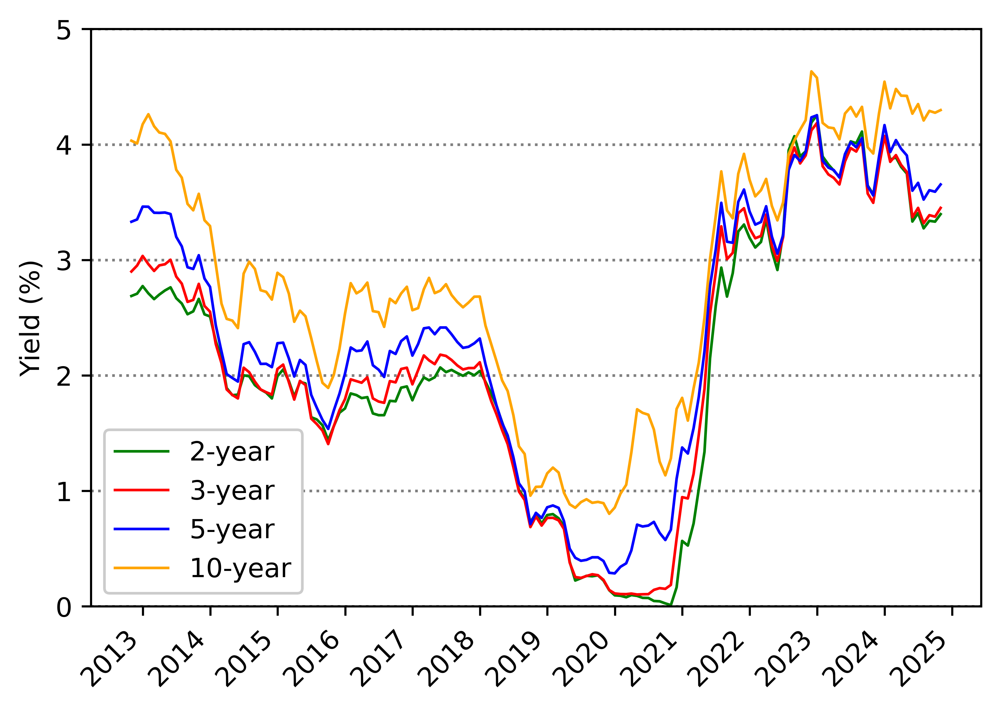
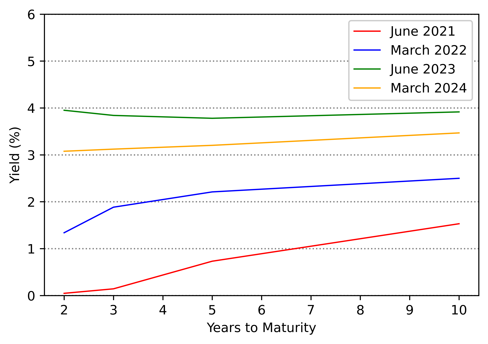
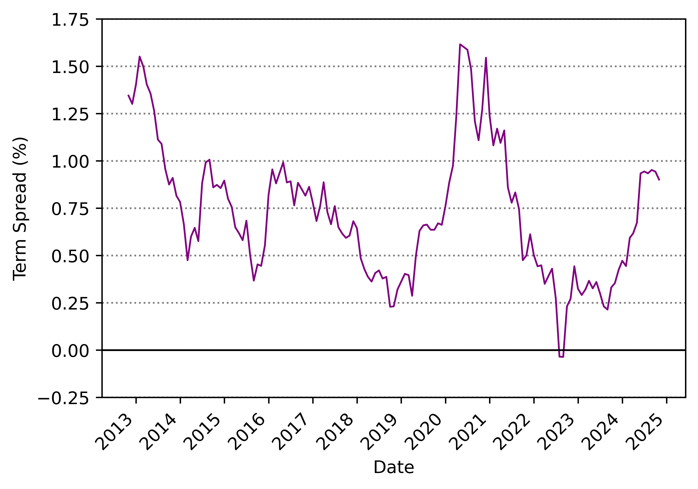
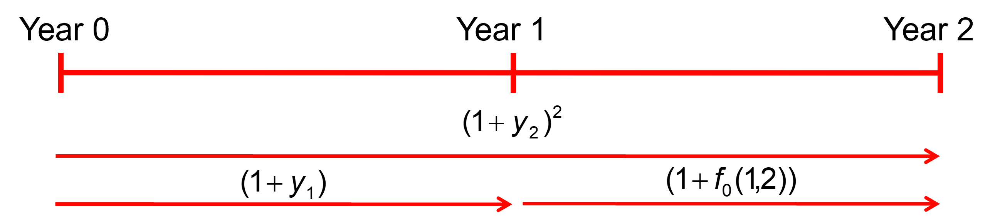
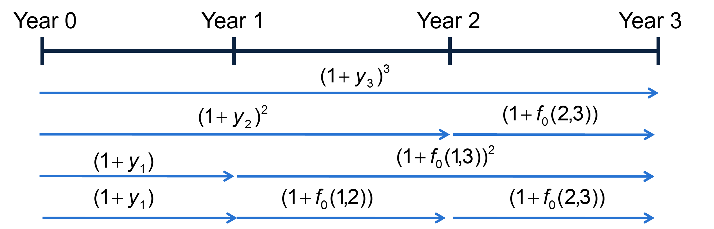

Term Structure of Interest Rates
FIN 223 Lecture 10
Andrew Ainsworth
University of Wollongong
Lecture outline
- What is the yield curve and why is it useful?
- It is a barometer of the economy and future interest rates
- Term structure of interest rates
- What is it?
- How do we estimate it?
- How do we really price bonds?
- We will see that each cash flow has its own discount rate
- Theories of the term structure
- How can we predict future interest rates?
- Reading: BKM Ch 10.6 (pp. 312-318)
What is the yield curve?
- Describes the relationship between yield and time to maturity at a given point in time across different fixed income securities
- Incorporates the views of market participants reflected in bond prices, and therefore, yields
- Different yield curve for different segments of the market (e.g. Treasury, AAA-rated corporate)
- The yield curve can provide an indication of the cost of debt for different maturities and issuers
The yield curve
- The yield curve can many different shapes
- Upward-sloping yield curve
- Indicates yields tend to increase with longer maturities
- Inverted yield curve
- Occurs when short-term rates are higher than long term rates
- Flat yield curve
- Rates for short- and long-term debt are essentially the same
- Humped
- Intermediate rates are the highest
Australian government bond yields

Australian government yield curves

Term spread: 10-year – 2-year yields

YTM and bond pricing
- To date, we have used the YTM to price a bond’s cash flows
\[P = \frac{C}{(1+y)} + \frac{C}{(1+y)^2} + \frac{C}{(1+y)^3} + ... + \frac{F + C}{(1+y)^N}\]
- But, investors do not price a bond using the same discount rate (\(y\)) for each cash flow
- Each cash flow will have its own discount rate that is dependent on the time taken for the investor to receive the cash flow
- Consider a 2-year bond paying semi-annual coupons at 8% p.a. yielding 6% p.a.
- This bond will have a price of $1037.17
YTM and bond pricing
- Pricing the bond using YTM
\[P = \frac{40}{(1.03)} + \frac{40}{(1.03)^2} + \frac{40}{(1.03)^3} + \frac{1040}{(1.03)^4}\]
- Pricing the bond using individual discount rates
\[P = \frac{40}{(1.0174)} + \frac{40}{(1.0199)^2} + \frac{40}{(1.0248)^3} + \frac{1040}{(1.0305)^4}\]
- Both methods obtain a price of $1037.17
- A coupon paying bond is equivalent to a package of zero coupon bonds
- Using the latter approach requires an understanding of the term structure of interest rates
Term structure of interest rates
- The term structure of interest rates refers to the relationship between YTM and maturity of default-free zero coupon bonds (pure discount bond)
- Spot rate of interest
- YTM of pure discount bond
- Spot curve
- Relationship between spot rate and maturity
- Zero coupon securities: U.S. T-bills or strips of U.S. Treasury securities
- We will use a face value of $1 for convenience
- \(z_j\) is the current price of a pure discount bond with a $1 face value
- \(y_j\) is the spot rate of interest on a zero coupon bond with \(j\) periods to maturity
\[z_j = \frac{1}{(1+y_j)^j}\]
Term structure of interest rates
- If \(j\) is in years then \(z_3\) is the price of a three-year zero coupon bond
- The spot rate is found by re-arranging
\[y_j = (z_j)^{-\frac{1}{j}}\]
- Note: if using semi-annual compounding then the zero coupon bond price is
\[z_j = \frac{1}{(1 + \frac{y_j}{2})^{2j}}\]
Bootstrapping the spot curve
- We can derive a spot curve to overcome the problem of limited zero coupon bonds being traded in the market
- To do this, we need to use a bootstrapping procedure to extract the spot rates for different maturities
- Consider the following three coupon paying bonds and their cash flows in each of the three years
| Bond |
Price |
Year 1 |
Year 2 |
Year 3 |
| 1 |
997 |
1040 |
|
|
| 2 |
1005 |
50 |
1050 |
|
| 3 |
984 |
60 |
60 |
1060 |
Bootstrapping the spot curve
- We first use the price of the one-year coupon paying bond to ‘back out’ the one-year spot rate
\[
\begin{align}
P_1 &= \frac{1000+C_1}{(1+y_1)^1} \\
997 &= \frac{1040}{(1+y_1)} \\
y_1 &= \frac{1040}{997} - 1 = 4.31 \% \\
\end{align}
\]
- The implied one-year zero coupon bond price is
\[
\begin{align}
z_j &= \frac{1}{(1+y_j)^j} \\
z_1 &= \frac{1}{1.0431} = 0.9587
\end{align}
\]
Bootstrapping the spot curve
- We can substitute the spot rate into the calculation of the 2-year bond price
\[
\begin{align}
P_2 &= \frac{C_1}{(1+y_1)} + \frac{1000+C_2}{(1+y_2)^2} \\
1005 &= \frac{50}{1.0431} + \frac{1050}{(1+y_2)^2} \\
y_2 &= 4.74\% \\
\therefore z_2 &= \frac{1}{1.0474^2} = 0.9115
\end{align}
\]
- We can continue with the same procedure to find the 3-year spot rate and zero coupon bond price
- \(y_3\) = 6.73 % and \(z_3\) = 0.8224
Bootstrapping the spot curve
| Maturity |
Implied Zero Price |
Spot Rate of Interest |
| 1 |
0.9587 |
4.31% |
| 2 |
0.9115 |
4.74% |
| 3 |
0.8224 |
6.73% |
- Let’s price the 3-year bond using the spot rates
\[P_3 = \frac{60}{(1.0431)} + \frac{60}{(1.0474)^2}
+ \frac{1060}{(1.0673)^3} = 984\]
- Or we can use the implied zero coupon bond prices (they are discount factors)
\[
\begin{align}
P_3 &= 60 \times z_1 + 60 \times z_2 + 1060 \times z_3 \\
&= 60 \times 0.9587 + 60 \times 0.9115 +
1060 \times 0.8224 \\
&= 984
\end{align}
\]
Forward rates of interest
- Given a set of pure discount bond prices (\(z_j\)), we can calculate a set of forward rates defined on date \(t\) as \(f_t(j,k)\)
- The forward rate can be locked in on date \(t\) for a loan starting on date \(j > t\) and maturing on date \(k > j\)
- This will remove investment uncertainty and risk

Forward rates of interest
- To preclude arbitrage, we need the following relationship between the forward rate, the j-period spot rate and the k-period spot rate
\[(1+y_j)^j \times (1+f_t(j,k))^{k-j} = (1+y_k)^k\]
- The forward rate is therefore
\[f_t(j,k) = \left[ \frac{(1+y_k)^k}{(1+y_j)^j} \right]^\frac{1}{k-j} - 1\]
- The forward rate at year 0 between year 1 and 2 is
\[f_0(1,2) = \left[ \frac{(1+y_2)^2}{(1+y_1)^1} \right]^\frac{1}{2-1} - 1\]
Forward rates of interest
- Let’s calculate the forward rates from our previous example
| Maturity |
Implied Zero Price |
Spot Rate of Interest |
| 1 |
0.9587 |
4.31% |
| 2 |
0.9115 |
4.74% |
| 3 |
0.8224 |
6.73% |

Forward rates of interest
- Let’s calculate the forward rates
\[
\begin{align}
f_t(j,k) &= \left[ \frac{(1+y_k)^k}{(1+y_j)^j} \right]^\frac{1}{k-j} - 1 \\
f_0(1,2) &= \left[ \frac{(1.0474)^2}{(1.0431)} \right] - 1
= 5.17 \% \\
f_0(2,3) &= \left[ \frac{(1.0673)^3}{(1.0474)^2} \right] - 1
= 10.83 \% \\
f_0(1,3) &= \left[ \frac{(1.0673)^3}{(1.0431)} \right]^\frac{1}{(3-1)} - 1
= 7.96 \%
\end{align}
\]
- Note: we can also use the zero coupon prices to achieve the same results
Theories of the term structure
- There exist numerous theories to explain the shape of the term structure
- We will review three of the theories
- Expectations theory
- Liquidity premium theory
- Market segmentation theory
Expectations theory
- Expectations theory asserts that forward rates are market expectations of future interest rates
\[f_t(j,k) = E_t[y(j,k)]\]
- Unbiased expectations means that there forecast errors (\(\varepsilon\)) have an average of zero
\[E_0[y(j,k)] = y(j,k) + \varepsilon\]
- If yield curve is upward sloping then interest rates are expected to rise in the future
- Implication of expectations theory is that bonds with different times to maturity are perfect substitutes
- It assumes investors will receive the same holding period return irrespective of bond choice
- Assumes risk neutrality of market participants and does not consider reinvestment risk
Liquidity premium theory
- Corporations and governments prefer issuing long-term securities
- Investors prefer buying shorter term securities
- To entice investors to purchase bonds with maturities longer than their holding periods, bond issuers offer a liquidity premium
- The forward rate comprises the expected future interest rate and liquidity premium (\(LP\))
\[f_t(j,k) = E_t[y(j,k)] + E_t[LP(j,k)]\]
- The liquidity premium is related to the risk of uncertain selling prices when investors purchase bonds with maturities beyond their intended holding period
- Larger premium for longer maturity bonds
Market segmentation theory
- Market segmentation theory asserts that the market for debt is segmented on the basis of the maturity preferences of different financial institutions and investors
- The yield curve changes as the supply and demand for funds within each maturity segment determines its prevailing interest rate
- If supply is greater than demand for short-term loans, short-term rates will be relatively low
- If at the same time, demand for long-term loans is higher than the available supply of funds, then long-term rates will move up
- In this situation, the yield curve will slope upward
Conclusion
- The yield curve plots yields versus time to maturity
- Term structure of interest rates
- We can bootstrap spot rates to price bonds
- Spot rates are interest rates on zero coupon bonds
- We can extract forward rates
- The principle of no arbitrage allows us to do this
- Theories of the term structure
- Forward rates can potentially be used to estimated future spot rates
- Different theories of the term structure can assist in extracting future spot rates from the term structure